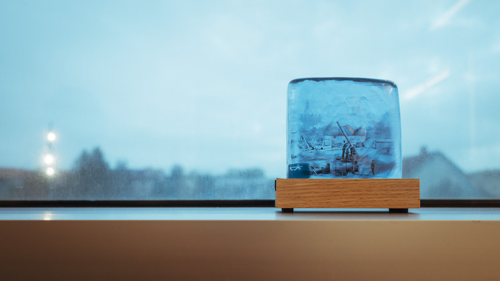

Visualisera museisamlingar
Att få en översikt över en museisamling är sällan en lätt uppgift. Ofta är en museisamling oöverskådlig och svårnavigerad om du inte har specialkunskaper eller erfarenhet av den. Idag presenteras samlingar på webben med hjälp av olika gränssnitt där användaren oftast söker sig fram till objekten. Hur kan vi upptäcka eller visa en museisamling på ett alternativt vis?